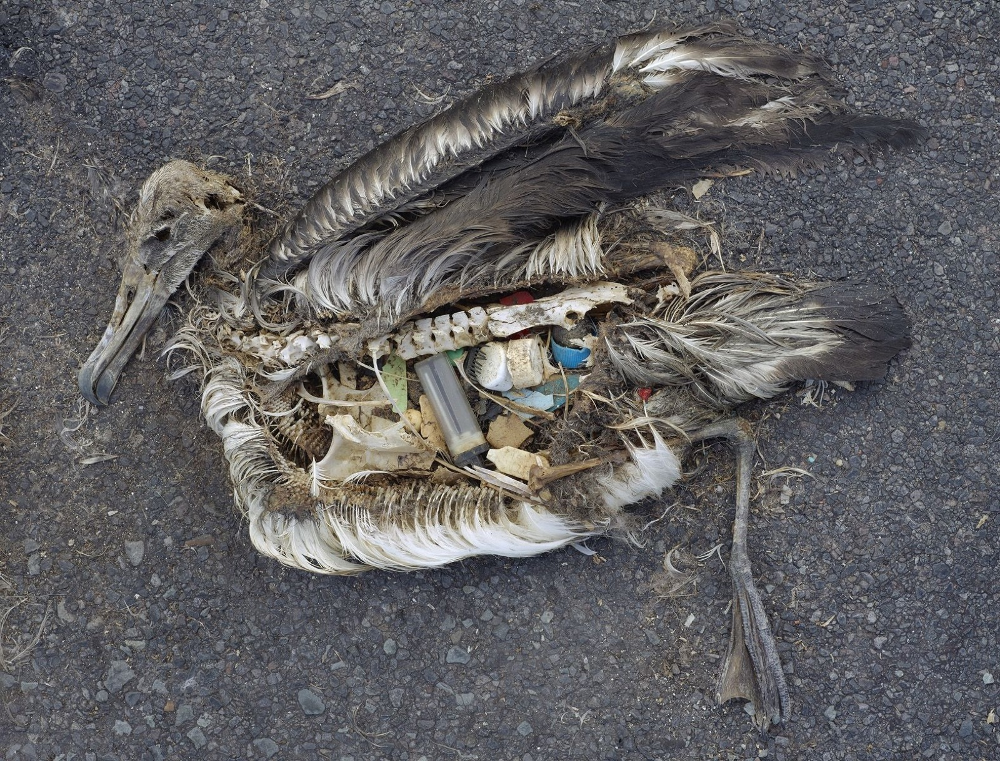

中途島，太平洋正中央。最靠近的大陸是 5,000 公里外的北美。 這裡沒有人類常駐，但有 100 萬隻黑背信天翁在這裡築巢、生小鳥。
2009 年，攝影師 Chris Jordan 第一次來到中途島。他原本以為會看到雪白的大鳥拍著巨翼， 劃過天空——很美的那種。
結果他看到的，是整片沙灘上躺著一隻一隻死掉的雛鳥。

母鳥為什麼餵小鳥吃塑膠？
塑膠在陽光下會發亮，浮在海面上看起來就像魚或魚卵。 信天翁母親從海上把它們叼起來，飛回中途島，吐進小鳥的嘴裡。
小鳥的胃被塑膠塞滿，但這些塑膠沒有任何營養。 牠們不是被毒死的——是活活餓死的。
偵查重點：科學家檢查這些塑膠時發現， 很多上面還有亞洲、歐洲、北美的文字—— 它們從世界各地的海岸被沖進海裡，最後跑進中途島小鳥的胃。
意思是——你今天丟的瓶蓋……
意思是，你今天在台南安平丟的瓶蓋，真的有可能跑進中途島某隻信天翁雛鳥的胃。
這不是嚇你，是真的。海洋是連在一起的——只要這個瓶蓋進了水溝， 就有機會進到河、進到出海口、進到太平洋洋流，最後漂到 5,000 公里外的中途島。
Source · Chris Jordan《Midway》紀錄片（2018）；USFWS Midway Atoll National Wildlife Refuge